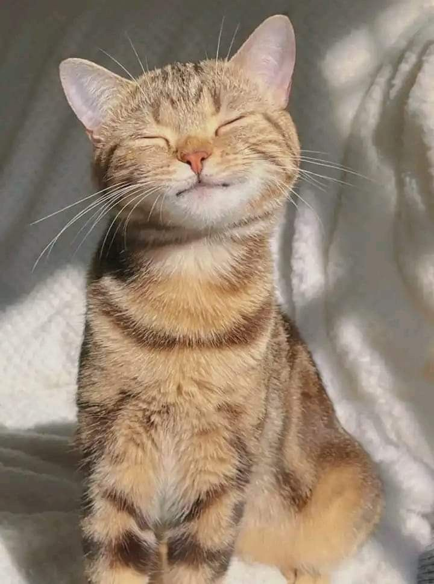
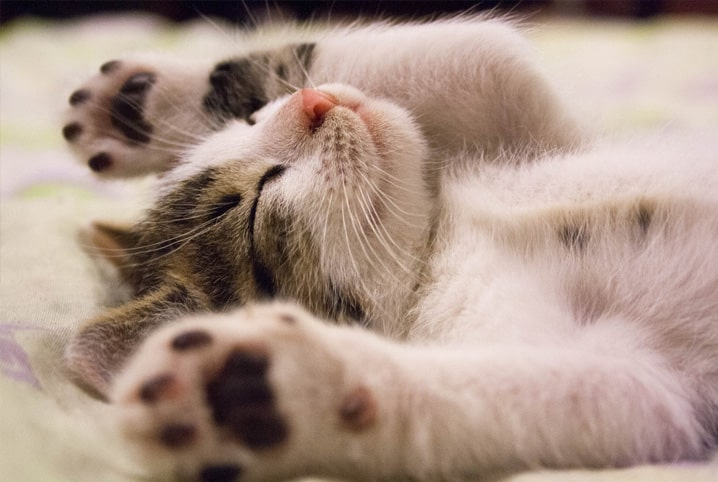
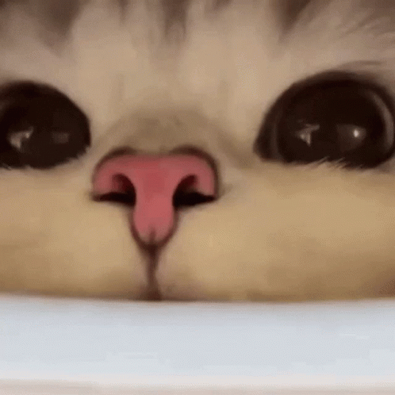

Introdução
Os gatos estão entre os animais de estimação mais populares do mundo. Conhecidos por sua independência, inteligência e personalidade única, eles convivem com os seres humanos há milhares de anos. Neste site, você conhecerá curiosidades, características e algumas das raças mais famosas do universo felino.
Como os gatos se tornaram domésticos?
Acredita-se que os gatos foram domesticados há cerca de 9 mil anos, qaundo começaram a viver próximos ás comunidades agrícolas. Eles eram atraídos pelos roedores que consumiam os grãos armaezandos pelos humanos, criando uma relação de benefício mútuo

Curiosidades Sobre os Gatos
Audição Impressionantes Clique aqui para saber mais. Os gatos conseguem ouvir frequência muito mais altas que os seres humanos e até mesmo que os cães.
Dormem Muito
Um gato pode dormir entre 12 e 16 horas por dia, chegando a passar mais da metade da vida descansando

Impressão Digital?
Assim como os humanos possuem impressões digitais únicas, cada gato possui um padrão exclusivo em seu nariz.

Ronronar Misterioso
Além de demonstrar felicidade, os gatos também podem ronronar para aliviar estresse e desconforto.
Visão Noturna
Os gatos enxergam muito melhor no escuro do que os humanos, graças á estrutura especial de seus olhos.
Mitos e Verdades
- Gatos sempre caem de pé
- Gatos são antissociais
- Bigodes ajudam na orientação
Nem sempre. Embora possuam grande capacidade de se orientar durante quedas, ainda podem sofrer lesões.
Mito. Muitos gatos criam fortes laços com seus tutores e demonstram afeto de diversas formas.
Verdade. Os bigodes são extremamentes sensíveis e auxiliam na percepção do ambiente.